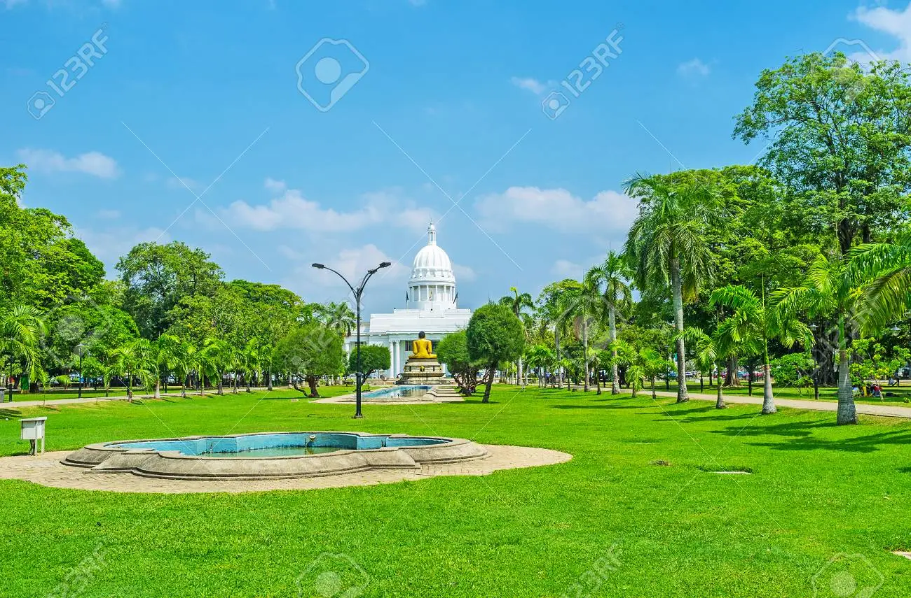

Colombo has numerous parks and playing fields. Among them are the Galle Face Green by the sea, the Vihara Maha Devi Park, and the Ridgeway Golf Links. Cricket and football (soccer and rugby) grounds are located throughout the city; tennis and track events are also popular. Sea bathing and surfing can be enjoyed at Mount Lavinia Beach, which is about 7 miles (11 km) south of the city. The National Zoological Gardens of Sri Lanka are located at nearby Dehiwala.
COLOMBO

The Viharamahadevi Park is a public park located in Colombo. It is the oldest and largest park of the Port of Colombo. Situated in front of the colonial-era Town Hall building, the park is named after Queen Viharamahadevi. The park was built on land donated to the Colombo city by Charles Henry de Soysa during the British rule of Sri Lanka, and used to be named "Victoria Park" after Queen Victoria. During World War II it was occupied by the British Army with Australian 17th Brigade based at Victoria Park. After the war the park was restored and open to the public in 1951..
Galle Face is a 5 ha (12 acres) ocean-side urban park, which stretches for 500 m (1,600 ft) along the coast, in the heart of Colombo, the financial and business capital of Sri Lanka. The promenade was initially laid out in 1859 by Governor Sir Henry George Ward, although the original Galle Face Green extended over a much larger area than is seen today. The Galle Face Green was initially used for horse racing and as a golf course, but was also used for cricket, polo, football, tennis, and rugby..
Mount Lavinia Beach is located just out of the Colombo city. This beach strip has a lot to offer for the locals as well as the tourists visiting Colombo. Along the beach there are many nice restaurants pubs as well as relaxing areas. As a tourist who is visiting Colombo, Mount Lavinia Beach is a must visit. The weekends could be crowded with locals though, during the week it is relaxing and peaceful. If you would relax at a pool overlooking the ocean or the sunset.
National Zoological Gardens of Sri Lanka is a zoological garden in Dehiwala, Sri Lanka, founded in 1936. It is home to various birds, mammals, reptiles, fish and amphibians. The zoo not only exhibits animals from Sri Lanka, but also exhibits species from across Asian and other parts of the globe.
The largest museum in Sri Lanka, the National Museum of Colombo was established in January 1877 by Sir William Henry Gregory, the then British Governor of Ceylon (Sri Lanka). Currently maintained by the Department of National Museum of the central government, the museum is home to a lot of important collections, including the crown and throne of the Kandyan monarchs.
The Independence Square is one the best places to relax in Colombo. It is located in the affluent Cinnamon Gardens district in Colombo. It serves as a monument, a park and a walking area as well. There is a memorial hall, the memorial museum, a vast green lawn and the Arcade. The Independence Memorial Hall was constructed in the year 1948 in order to commemorate our independence from the British rule. The Memorial Hall is an open sided hall with beautifully carved cement columns and a shapely tiled roof. Statues of seated lions are surround this hall/h4>